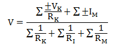

- The common voltage across parallel branches with different voltage sources can be determined by the relation V = (V1 / R1 + V2 / R2 + V3 / R3) / ( 1 / R1 + 1 / R2 +1 / R3 .....) The statement is associated with which theorem ?
The Millman’s theorem states that the voltage at the ends of the circuit is given by:

Here,
VK is the voltage generators and IM the current generators.
RI is the resistances on the branches with no generator.
RK is the resistances on the branches with voltage generators.
RM is the resistances on the branches with current generators.
Hence, the given voltage relation is clearly matched with the above formula. Thus, the statement is associated with the Millman’s theorem. - The number of independent equations to solve a network is equal to
The chords are nothing but the group of three or more nodes connected together. Each node has loop equations. That equation is independent to each other. Hence, the number of independent equations to solve a network is equal to its number of chords.
- Which of the following is not a vector ?
We know that the electrical potential is E = - Δ VE. It is nothing but the amount of work needed to get a positive charge to that spot. It is a scalar quantity because work is not a vector quantity. However, scalars are allowed to be negative. The minus sign on the potential does not indicate the vector direction. A negative potential can be attracted by a positive potential and repulsed by another negative potential.
- What is the dielectric constant of mica ?
The following are dielectric constant of different materials. They are,
1. Vacuum - 1
2. Glass - 5 to 10
3. Mica - 3 to 8
4. Mylar - 3.1
5. Neoprene - 6.70
6. Plexiglas - 3.40
7. Polyethylene - 2.25
8. Polyvinyl chloride - 3.18
9. Teflon - 2.1
10. Germanium - 16
11. Strontium titanate - 310
12. Water - 80.4
13. Glycerin - 42.5 . - Magnetic moment is a
The magnetic moment can be considered to be a vector quantity with direction perpendicular to the current loop in the right hand rule direction. The amount of magnetic moment created by the current loop is μ = I × A. Where, I is current flowing through the loop and A is the area covered by the loop. So, the torque generated by the magnetic moment is T = μ × B. Where, B is the magnetic field. This torque tends to line up the magnetic moment with the magnetic field B, so this represents its lowest energy configuration. The potential energy associated with the magnetic moment is U (ø) = - μ × B. The negative sign represents that the magnetic moment is vector quantity.
- Temporary magnets are used in which of the following ?
Permanent magnets lose their power after some days. So, if we use permanent magnet in those equipments, then it does not give efficient output. But, the above mentioned equipments have to work efficiently at all time. That is why the temporary magnets (or) the electromagnets are used in the above mentioned machines.
- Autotransformer makes effective saving on copper and copper losses, when its transformation ratio is equal to
To quantify the saving the total quantity of copper used in an auto transformer is expressed as a fraction of that used in a two winding transformer as, copper in auto transformer / copper in two winding transformer = ((T1 – T2)I2 + T2(I2 – I1)) / (T1I1 + T¬2I2) = 1 – (2T2I1 / (T1I1 + T2I2)). But T1I1 = T2I2 so the Ratio = 1 – (2T2I1 / 2T1I1) = 1 – (T2/T1). This means that an auto transformer requires the use of lesser quantity of copper given by the ratio of turns. Hence, if the transformation ratio is approximately equal to one, then the copper saving is good and the copper loss is less.
- The noise resulting from vibrations of laminations set by magnetic forces, is termed as
The hum is generated by the magnetic field that happens due to the continuous reversing of the frequency of the supply. The magnetic field in the AC machine or transformers has coils which are still able to move slightly due to the vibration. The laminations of the armature are treated in a similar way but also vibrate at the line frequency and it is almost impossible to stop. We can only reduce it by good design.
- In circle diagram for induction motor, diameter of circle represents which of the following ?
Basically in the circle diagram for an induction motor, the diameter of the circle represents the rotor current and by using that circle, the current per phase with rotor blocked and full voltage on stator and the line current in amperes for any chosen load can be found.
- Tarapur nuclear power plant has which type of reactor?
The Tarapur nuclear power plant has initially built with two boiling water reactor with the capacity of 210 MW on 1969. But, now this plant has built extra two pressurized heavy water reactor with the capacity of 540 MW on 2006.
- Inside a hollow conducting sphere
For any concentric sphere inside conducting sphere, the charge enclosed is zero hence the electric field is zero.
- Two infinite parallel metal plates are charged with equal surface charge density of the same polarity. The electric field in the gap between the plates is
The equal surface charge densities are having same charge either positive or negative. So, same charge repels each other. Hence, the resultant electric field in the gap between the plates is zero.
- As a result of reflection from a a plane conducting wall, electromagnetic waves acquire an apparent velocity greater than the velocity of light in space. This is called the
The phase velocity of a wave is the rate at which the phase of the wave propagates in space. This is the speed at which the phase of any one frequency component of the wave travels. Basically, the speed of this velocity is greater than the velocity of light in space.
- Length of the cable is doubled, its capacitance C will be
The length of the cable and the capacitance of the cable are directly proportional to each other. Hence, if the length gets doubled, then the capacitance also can be doubled.
- ————- is the most detrimental impurity in the magnetic materials
The carbon material is the harmful material than the other materials. That is why the carbon is the most detrimental impurity in the magnetic materials. Because of this reason, the amount of carbon in commercial magnetic material is added as low as 0.01 percent.
- The chemical effect of current is used in
The battery is rated in terms of ampere hour. The chemical effect of current is created by the batteries. Hence, the DC ammeter hour meter is used to measure the ampere hour rating of the battery.
- Swamping resistance is used to compensate
Swamping resistance is connected in series with the meter and that resistance has a negligible resistance co-efficient in order to reduce temperature errors in shunted ammeters.
- ———– was the first city in India to adopt electric traction.
Electric traction was introduced on Indian Railways in the year 1925 on 1.5 KV DC and the first electric train ran between Bombay's Victoria Terminus and Kurla along the Harbour Line on February 3rd 1925. The total distance of 9.5 miles and that was flagged off by the Governor of Bombay “Sir Leslie Orme Wilson”.
- Unit of deflection sensitivity of a CRO is
The deflection sensitivity is actually the voltage required to transfer the electronic beam through a unit of length. So, the unit of deflection sensitivity if meter/volt.
- Null type recorders are
The recorders based on the working principle of self balancing or null conditions are called as the potentiometric recorders. The above all recorders are working on the same principle and as this recorder is based on the principle of null condition, it is also called as null type Recorders.
{kind=link}
Design with  by SARU TECH
by SARU TECH
www.sarutech.com
Content Credited to electrical4u.com
Online Electrical Engineering Study Site